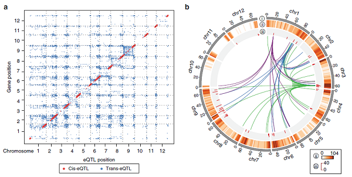

Nat Commun. | 醋栗番茄基因组为研究番茄育种过程中的结构变异提供了依据
醋栗番茄（Solanum lycopersicum, SP）是栽培番茄（S. lycopersicum）的野生祖先种，他的果实小、颜色红呈现圆形。醋栗番茄在南美洲被驯化形成了观赏番茄（S. lycopersicum var. cerasiforme, SLC），随后在中美洲被改良成现在可食用的大果型栽培番茄（S. lycopersicum var. lycopersicum, SLL）。醋栗番茄和栽培番茄之间可以自由杂交，因此醋栗番茄可以为栽培番茄的抗性、品质性状改良提供基因资源。高质量的醋栗番茄参考基因组将为两者之间基因组变异鉴定、重要的驯化相关基因挖掘以及栽培番茄育种改良提供帮助。
一个高质量的醋栗番茄基因组以及野生番茄、栽培番茄之间广泛的结构变异
作者结合 PacBio 长读长测序、Hi-C 染色质互作信息、与栽培番茄基因组间共线性信息以及遗传连锁图组装了一个高质量的醋栗番茄 LA2093 的参考基因组，并通过与遗传图共线性分析、BUSCO 分析等验证了组装结果的可靠性。基因组结构变异（structural variants, SVs）包括插入缺失、倒位、重复等，对作物驯化有重要的影响，因此作者通过基因组间比较鉴定了 LA2093 和现代栽培番茄 Heinz 1706 间的结构变异，并且发现 gypsy-like 的逆转录转座子区域有更高的 indels 发生频率，而只有 14.8% indels 发生在基因区或启动子区，但这些 indels 足以和一半以上的基因重叠，富集分析表明这些 indels 可能和野生番茄、栽培番茄之间的抗病性以及品质性状相关。
番茄驯化和育种过程中对 SVs 的选择以及对农艺性状的影响
利用重测序信息，作者鉴定了 597 份野生和栽培番茄（51 份 SP，6 份 S. cheesmaniae 和 S. galapagense（SCG），228 份 SLC，226 份 heirloom, 52 份现代栽培种和 34 份其他栽培种）在这些 SVs 位点的基因型。通过比较不同群体种 SV 基因型频率发现，驯化和改良改变了 SV 基因型的分布，LA2093 类型的纯合 SV 在野生番茄中广泛存在，而 Heinz 1706 类型的纯合 SVs 在栽培番茄中逐渐固定下来。这些收到驯化、改良选择的 SVs 影响到胁迫和刺激相应、生物合成、细胞分化、胚发育、授粉和生殖过程相关的基因。随后作者研究了影响果实大小、番茄红素含量和成熟相关基因 SV 的不同等位基因频率在不同群体中的动态变化以及不同基因型的表达量差异，证实了 SV 在番茄驯化改良过程中的重要作用。对这些 SV 的研究为将来育种改良番茄的品质、抗性的提供新的目标基因。
全基因组 eQTL 鉴定
利用已发表的番茄果实转录组数据，作者鉴定到 10,789 个 eQTL 影响了 5595 个基因的表达，其中 cis-eQTL 和 trans-eQTL 相比可以解释更多的表达量变异。作者进一步鉴定了 48 个 eQTL 热点区域，这些热点区域调控了 554 个基因的表达。

原文链接